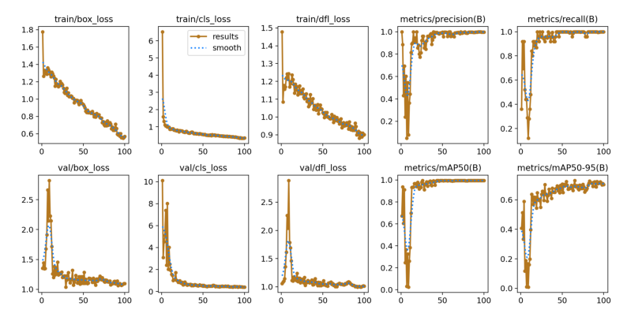
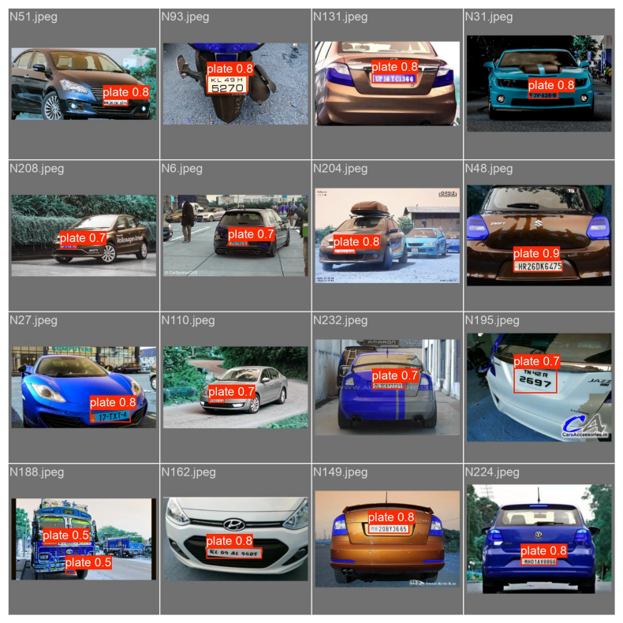
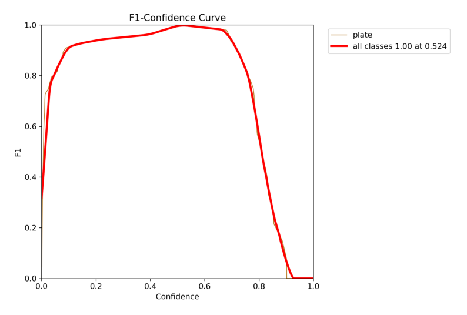
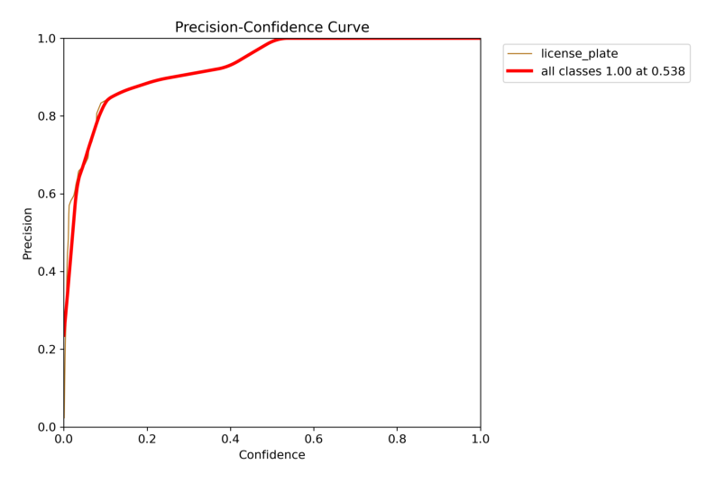
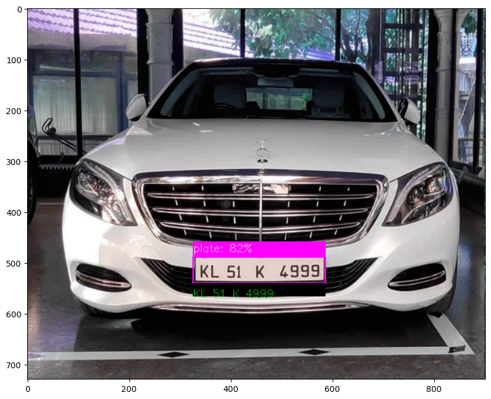

License Plate Detection and Recognition
Project Overview
Developed a license plate detection and recognition system using YOLOv8. A deep learning project focused on computer vision.
Technologies Used
- Python
- YOLOv8 (You Only Look Once, version 8)
- OpenCV
- Pytesseract (for OCR)
- Ultralytics YOLO
- Pandas for data manipulation
- Matplotlib for visualization
Dataset
Custom dataset with 225 annotated images of vehicles.
Methodology
- Data Preparation:
- Converted XML annotations to YOLO format
- Normalized bounding box coordinates
- Model Training:
- Trained YOLOv8 nano and small models for 100 epochs each
- Model Evaluation:
- Analyzed training metrics and visualized results
- Inference Pipeline:
- Developed custom functions for detection, NMS, and OCR
Results
Training results for YOLOv8 small model:
Predictions on validation set:
Additional Performance Metrics
F1 Score Curve:
Precision Curve:
Result on test set:
Key Achievements
- Successfully trained custom object detection models for license plates
- Implemented an end-to-end pipeline from detection to OCR
- Worked with real-world, unstructured data
Future Improvements
- Expand dataset size and diversity
- Experiment with more advanced YOLO variants
- Implement real-time detection for video streams
- Improve OCR accuracy for challenging plates
Project Information
- Category: Computer Vision
- Client: Self-initiated
- Project Date: August 2024
- Project URL: For more details about this project, please visit the GitHub repository: GitHub Repository